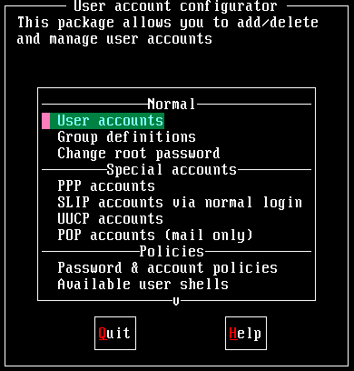
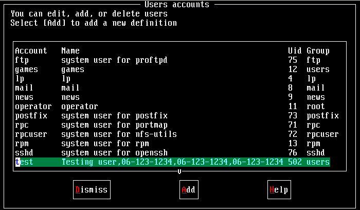
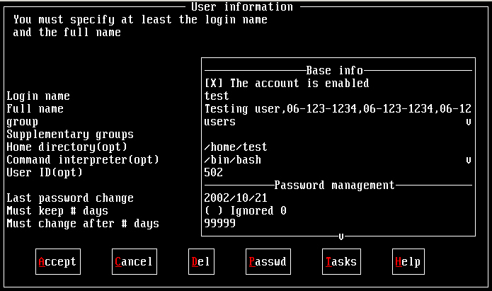
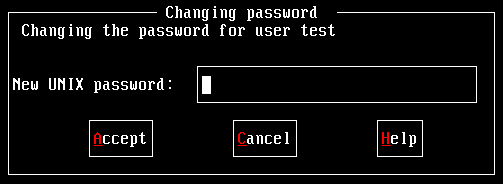
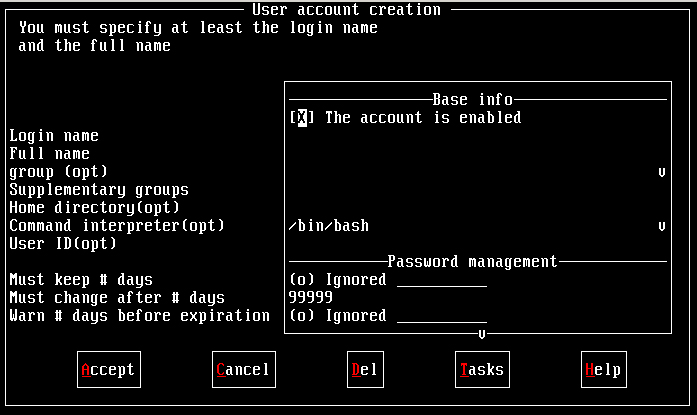

管理员的工作中，相当重要的一环就是『管理账号』啦！因为整个系统都是你在管理的，并且所有的一般用户的申请，都必须要透过你的协助才行！所以你就必须要了解一下如何管理好一个网站的账号管理啦！在管理 Linux 主机的账号时，我们必须先来了解一下 Linux 到底是如何辨别每一个使用者的！
- 使用者的 ID 与群组的 ID ：
其实 Linux 并不会直接认识你的『账号名称』，他认识的其实是你的『账号 ID 』才是！如果你曾经以 tarball 安装过软件的话，那么应该不难发现，在解压缩之后的档案，嘿?档案拥有者竟然是『不明的数字』？奇怪吧？这没什么好奇怪的，因为 Linux 说实在话，他真的只认识代表你身份的号码而已！而对应的号码与账号，则是记录在 /etc/passwd 当中！大致上的情况就像这样，所以呢，当你要登入你的 Linux 主机的时候，那个 /etc/passwd 与 /etc/shadow 就必须要让系统读取啦，（这也是很多攻击者会将特殊账号写到 /etc/passwd 里头去的缘故！）所以呢，如果你要备份 Linux 的系统的账号的话，那么这两个档案就一定需要备份才行呦！
- 怎样登入 Linux 主机呀？
好了，那么我们再来谈一谈，到底我们是怎样登入 Linux 主机的呢？其实也不难啦！当我们在主机前面或者是以 telnet 或者 ssh 登入主机时，系统会出现一个 login 的画面让你输入账号，这个时候当你输入账号与密码之后， Linux 会：
- 先找寻 /etc/passwd 里面是否有这个账号？如果没有则跳出，如果有的话则将该账号对应的 UID ( User ID )与 GID ( Group ID )读出来，另外，该账号的家目录与 shell 设定也一并读出；
- 再来则是核对密码表啦！这时 Linux 会进入 /etc/shadow 里面找出对应的账号与 UID，然后核对一下你刚刚输入的密码与里头的密码是否相符？
- 如果一切都 OK 的话，就进入 Shell 控管的阶段��！
- 认识 UID、GID、SUID与SGID：
还记得我们在『档案系统与档案属性』那一篇文章的时候有提到每一个档案都具有『拥有人与拥有群组』的属性吗？那么档案如何判别他的拥有者与群组呢？其实就是利用 UID 与 GID 啦！每一个档案都会有所谓的拥有者 ID 与拥有群组 ID ，亦即是 UID 与 GID ，然后系统会依据 /etc/passwd 的内容，去将该档案的拥有者与群组名称，使用账号的形式来秀出来！我们可以作个小实验，你可以以 root 的身份 vi /etc/passwd ，然后将你的一般身份的使用者的 ID 随便改一个号码，然后再到你的一般身份的目录下看看原先该账号拥有的档案，你会发现该档案的拥有人变成了『数字了』呵呵！这样可以理解了吗？
[root @test /root]# vi /etc/passwd
root:x:0:0:root:/root:/bin/bash
bin:x:1:1:bin:/bin:/sbin/nologin
daemon:x:2:2:daemon:/sbin:/sbin/nologin
adm:x:3:4:adm:/var/adm:/sbin/nologin
test:x:500:500:test user:/home/test:/bin/bash <==将 500 改成 510
[root @test /root]# cd /home/test
[root @test test]# ll
-rw-rw-r-- 1 500 test 12542 Apr 12 11:22 test
看上面，拥有这变成了数字了～了解了之后，请赶快回到 /etc/passwd 里面，将数字改回来喔！
- 认识 /etc/passwd 档案与 /etc/shadow 档案：
由上面的说明您大概已经知道，嘿嘿！账号管理最重要的两个档案就是『 /etc/passwd 与 /etc/shadow 』了！这两个档案可以说是 Linux 里头最重要的档案之一了！如果没有这两个档案的话，呵呵！您可是无法登入 Linux 的呦！
- passwd 的构造：
这个档案的构造是这样的：每一行都代表一个账号，有几行就代表有几个账号在你的系统中！不过需要特别留意的是，里头很多账号本来就是系统中必须要的（例如 bin, daemon, adm, nobody 等等），请不要随意的杀掉他??；
root:x:0:0:root:/root:/bin/bash
bin:x:1:1:bin:/bin:/sbin/nologin
daemon:x:2:2:daemon:/sbin:/sbin/nologin
adm:x:3:4:adm:/var/adm:/sbin/nologin上面是 Mandrake 9.0 预设的几个账号，这些账号是系统在使用的呦！我们先来看一下 root 这个系统管理员这一行好了，你可以明显的看出来，每一行使用『:』分隔开，共有七个咚咚，分别是
- 账号名称：就是账号名称啦！对应 UID 用的！例如 root 就是预设的系统管理员的账号名称；
- 密码：早期的 Unix 系统的密码是放在这个档案中的，不过由于这样一来很容易造成数据的被窃取，所以后来就将数据给他改放到 /etc/shadow 中了，这一部份等一下再说，而这里你会看到一个 x ，呵呵！别担心密码已经被移动到 shadow 这个加密过后的档案��；
- UID：这个就是使用者识别码（ID）��！通常 Linux 对于 UID 有几个限制需要说给您了解一下：
上面这样说明可以了解了吗？是的， UID 为 0 的时候，就是 root 呦！所以请特别留意一下你的 /etc/passwd 档案！
- 0 系统管理员，所以当你要作另一个系统管理员账号时，你可以将该账号的 UID 改成 0 即可；
- 1~500 保留给系统使用的ID，其实 1~65534 之间的账号并没有不同，也就是除了 0 之外，其它的 UID 并没有不一样，预设 500 以下给系统作为保留账号只是一个习惯。这样的好处是，以 named 为例，这个程序的预设所有人 named 的账号 UID 是 25 ，当有其它的账号同样是 25 时，很可能会造成系统的一些小问题！为了杜绝这样的问题，建议保留 500 以前的 UID 给系统吧！
- 500~65535 给一般使用者用的！
- GID：这个与 /etc/group 有关！其实 /etc/group 的观念与 /etc/passwd 差不多，只是他是用来规范 group 的而已！
- 说明：这个字段基本上并没有什么用途，只是用来解释这个账号的意义而已！不过，如果您提供使用 finger 的功能时，这个字段可以提供很多的讯息呢！底下的 chfn 可以解释一下��！
- 家目录：这是使用者的家目录，以上面为例， root 的家目录在 /root ，所以当 root 登入之后，马上在的所在就是 /root 里头啦！呵呵！如果你有个账号的使用空间特别的大，你想要将该账号的家目录移动到其它的硬盘去，没有错！可以在这里进行修改呦！预设的使用者家目录在 /home/yourIDname
- Shell ：所谓的 shell 是用来沟通人类下达的指令与硬件之间真正动作的界面！我们通常使用 /bin/bash 这个 shell 来进行指令的下达！关于 shell 的用法我们会在后面再提及的！这里比较需要注意的是，有一个 shell 可以用来替代成让账号无法登入的指令！那就是 /bin/false 这个东西！这也可以用来制作纯 pop 邮件账号者的数据呢！
- shadow 的构造：
由于 /etc/passwd 并不安全，所以后来发展出将密码移动到 /etc/shadow 这个档案中分隔开来的技术！并且加入了很多的限制参数在 /etc/shadow 里头！我们来了解一下这个档案的构造吧！
root:$K.K2.hqu.QfV.dkjjteojiasdlkjeo:11661:0:99999:7:::
bin:*:11661:0:99999:7:::
daemon:*:11661:0:99999:7:::
adm:*:11661:0:99999:7:::这是 shadow 的形式，也同样的以『:』作为分隔的符号。数一数，共可以发现有九个字段，分别给他说明如下：
- 账号名称：这个跟 passwd 需要对应！也就是跟 passwd 相同的意思啦！
- 密码：这个才是真正的密码，而且是经过编码过的密码啦！你只会看到有一些特殊符号的字母就是了！需要特别留意的是，虽然这些加密过的密码很难被解出来，但是『很难』不等于『不会』，所以，这个档案的预设属性是『-rw-------』亦即只有 root 才可以读写就是了！你得随时注意，不要不小心更动了这个档案的属性呢！另外，如果是在密码栏的第一个字符为『 * 』表示这个账号并不会被用来登入的意思。所以万一哪一天你的某个使用者不乖时，可以先在这个档案中，将他的密码多加一个 * ！嘿嘿！他就无法使用该账号��！直到他变乖了，再给他启用啊！
注意事项：密码忘记或者被更动了？ 有的时候会发生这样的情况，就是说，你的 root 密码忘记了！要怎么办？重新安装吗？另外，有的时候是被入侵了， root 的密码被更动过，该如何是好？
这个时候就必须要使用到 /etc/shadow 这个数据了！我们刚刚知道密码是存在这个档案中的，所以只要你能够以软盘开机，进入『单人维护系统』，那么就可以不用输入密码来以 root 的身份登入（通常就是在 boot: 时输入 linux single 就是了！）然后进入 /etc/shadow 这个档案中，将 root 的密码这一栏全部清空！然后再登入 Linux 一次，这个时候 root 将不需要密码（有的时候需要输入空格符）就可以登入了！这个时候请赶快以 passwd 设定 root 密码即可！
- 上次更动密码的日期：这个字段记录了『更动密码的那一天』的日期，不过，很奇怪呀！在我的例子中怎么会是 11979 呢？呵呵，这个是因为计算 Linux 日期的时间是以 1970 年 1 月 1 日作为 1 ，而 1971 年 1 月 1 日则为 366 啦！所以这个日期是累加的呢！得注意一下这个资料呦！那么最近的 2002 年 1 月 1 日就是 11689 啦，了解了吗？
- 密码不可被更动的天数：第四个字段记录了这个账号的密码需要经过几天才可以被变更！如果是 0 的话，表示密码随时可以更动的意思。这的限制是为了怕密码被某些人一改再改而设计的！如果设定为 20 天的话，那么当你设定了密码之后， 20 天之内都无法改变这个密码呦！
- 密码需要重新变更的天数：由于害怕密码被某些『有心人士』窃取而危害到整个系统的安全，所以有了这个字段的设计。你必须要在这个时间之内重新设定你的密码，否则这个账号将会暂时失效。而如果像上面的 99999 的话，那就表示，呵呵，密码不需要重新输入啦！不过，如果是为了安全性，最好可以设定一段时间之后，严格要求使用者变更密码呢！
- 密码需要变更期限前的警告期限：当账号的密码失效期限快要到的时候，系统会依据这个字段的设定，发出『警告』言论给这个账号，提醒他『再过 n 天你的密码就要失效了，请尽快重新设定你的密码呦！』，如上面的例子，则是密码到期之前的 7 天之内，系统会警告该用户。
- 账号失效期限：如果用户过了警告期限没有重新输入密码，使得密码失效了，而该用户在这个字段限定的时间内又没有跟 root 反应，让账号重新启用，那么这个账号将暂时的失效！
- 账号取消日期：这个日期跟第三个字段一样，都是使用 1970 年以来的日期设定。这个字段表示：这个账号在此字段规定的日期之后，将无法再使用。这个字段会被使用通常应该是在『收费服务』的系统中，你可以规定一个日期让该账号不能再使用啦！
- 保留：最后一个字段是保留的，看以后有没有新功能加入。
这个 /etc/shadow 是很重要的数据，千万不能遗失也不能被 root 以外的人看到或修改！尤其是密码栏，因为很早之前就已经发明了『暴力计算』密码的程序，如果你的密码被看过了，则别人可以利用该程序去演算出你的真实密码，呵呵，到时候可就伤脑筋了！切记切记！
- 认识 /etc/group 与 /etc/gshadow 档案：
认识账号与密码是使用 /etc/passwd 与 /etc/shadow ，那么认识 group 就是 /etc/group 与 /etc/gshadow ��！OK！我们也来看看这两个档案的构造吧！
- 认识 /etc/group
这个档案可以让你直接将账号所要支持的群组加进来！例如你有一个账号名称为 myaccount ，你想要让这个账号可以支持 root 这个群组，则你可以直接在 /etc/group 里面加入呢！很方便，不需要动用的指令呦！
root:x:0:root
bin:x:1:root,bin,daemon
daemon:x:2:root,bin,daemon
sys:x:3:root,bin,adm
adm:x:4:root,adm,daemon这个内容也说明如下：
- 群组名称：就是群组名称啦！
- 群组密码：通常不需要设定，因为我们很少使用到群组登入！不过，同样的，密码也是被纪录在 /etc/gshadow 当中��！
- 群组 ID：就是所谓的 GID 啦！
- 支持的账号名称：这个群组里面的所有的账号，如上面所言，如果你想要让 mysccount 也属于 root 这个群组的话，那么就将上面的第一行最后面加上 ,myaccount （不要有空格）使成为『root:x:0:root,myaccount』就可以啦。
- /etc/gshadow 的构造：
root:::root
bin:::root,bin,daemon
daemon:::root,bin,daemon
sys:::root,bin,adm
adm:::root,adm,daemon一般来说，group password 是用来让那些不在 group 中的成员，临时加入 group 用的，有兴趣的话可以使用 man newgrp 了解一下他的用法！不过，因为牵涉到 "密码"，不好管理，因此很少用。真想让对方加入，不如将对方加入该群组，用密码反而不方便。
- 增加使用者的一般步骤：
新增使用者的时候，如果该使用者所属的群组不存在，则得(1)先新增群组；然后(2)再新增使用者账号。当然，如果要删除群组时，则必须要反过来，先删除使用者才能删除群组！这点请大家留意��！
认识完了一些需要注意的东西之后，我们来研究一下如何以『指令』增加群组、使用者与变更密码吧！在接下来的例子中，『您可以依照底下的案例直接下达指令去试看看！』实作是真的很重要的啦！
- groupadd
语法：说明：
[root @test /root ]# groupadd [-g GID] groupname
参数说明：
-g GID ：自行设定 GID 的大小
范例：
[root @test /root]# groupadd -g 55 testing<==设定一个群组，GID为 55
这个指令会增加群组呢！而作用到的档案只有『/etc/group 与 /etc/gshadow』这两个档案，说实在的，你也可以直接修改这两个档案就好了，根本不需要使用到这个指令的！使用 vi 修改上面两个档案还比较简单呢！另外，如果你要新增的使用者所要的群组并不存在于系统中，那么您在增加使用者账号之前，就必须要先新增群组��！
- groupdel
语法：说明：
[root @test /root ]# groupdel groupname
参数说明：
范例：
[root @test /root]# groupdel testing
这很简单的，就是将 group ID 给他杀掉去！不过，有一点必须要特别留意，就是『在杀掉群组之前，请先将该群组的 primary 使用者删除！』才好！那什么是 Primary 的使用者呢？说穿了也很简单啦！就是 /etc/passwd 里面，那个 GID 设定为这个群组的 GID 的那个使用者就对啦！
- useradd
语法：说明：
[root @test /root ]# useradd [-u UID] [-g GID] [-d HOME] [-mM] [-s shell] username
参数说明：
-u ：直接给予一个 UID
-g ：直接给予一个 GID （此 GID 必须已经存在于 /etc/group 当中）
-d ：直接将他的家目录指向已经存在的目录（系统不会再建立）
-M ：不建立家目录
-s ：定义其使用的 shell
范例：
[root @test /root]# useradd testing <==直接以预设的数据建立一个名为 testing 的账号
[root @test /root]# useradd -u 720 -g 100 -M -s /bin/bash testing <==以自己的设定建立账号
这个指令能够变更的档案可多了！包括了底下的各个档案：
- /etc/passwd
- /etc/shadow
- /etc/group
- /etc/gshadow
- /etc/skel
- /etc/default/useradd
- /etc/login.defs
建立预设的账号：
建立账号的时候，如果没有特殊的设定，通常我们只使用『 useradd username 』就可以建立一个名为 username 的账号了！不过你知道预设的账号的基本设定吗？嘿嘿嘿嘿！基本设定就在 /etc/login.defs 与 /etc/default/useradd 这两个档案中！在 login.defs 里头有点像底下这样：几乎可以设定的都在这里设定了！所以需要了解一下这个档案！另外，如果你是专门开启 mail server 的，那么由于使用者账号不需要登入主机，所以也就不需要给予家目录，这个时候最后一项 GREATE_HOME 或者可以设定为 no ！此外，当你以预设的数据建立账号时，该账号的 UID 将会取目前在 /etc/passwd 当中『最大的（其实是小于 60000）』那一个 UID + 1 即是预设帐号的 UID ��！
MAIL_DIR /var/spool/mail <==邮件预设目录摆放处
PASS_MAX_DAYS 99999 <==密码需要变更的时间
PASS_MIN_DAYS 0 <==密码多久需要变更
PASS_MIN_LEN 5 <==密码的最小长度（这个可以改大一些吧！）
PASS_WARN_AGE 7 <==密码快要失效之前几天发警告讯息？
UID_MIN 500 <==预设帐号最小起算的 UID 数目（最小为 500 ）
UID_MAX 60000 <==最大的 UID 限制
GID_MIN 500 <==GID 限制
GID_MAX 60000 <==GID 限制
CREATE_HOME yes <==是否建立家目录，预设是要建立家目录（若为 mail server 可以取消此项目）而至于 useradd 内容则为：
在这个项目中，最需要了解的就是 SKEL 啦！当你建立一个名为 testing 的账号时，预设的家目录会是『 /home/testing 』这个目录，而这个目录的内容就是由 /etc/skel 所 copy 过去的！所以『当你想要让使用者的预设家目录内容更动时，可以直接将要更动的数据写在 /etc/skel 当中！』
GROUP=100 <==预设的使用者群组为 100 ，查看一下 /etc/group 时，这个群组名称为 users 呢！
HOME=/home <==预设使用者的家目录建立的目录
INACTIVE=-1 <==是否不启动，设定为 -1 自然就是启动啦！
EXPIRE= <==是否需要设定『死亡』时间？如果你希望该用户在期限到之后就不许登入，此项可以设定天数。
SHELL=/bin/bash <==预设的 Shell 为何？
SKEL=/etc/skel <==使用者家目录的内容！
userdel
语法：说明：
[root @test /root ]# userdel [-r] username
参数说明：
-r ：将该账号的[home directory]与[/var/spool/mail/username]一并删除！
范例：
[root @test /root]# userdel testing <==只有砍掉 /etc/passwd 与 /etc/shadow 的该账号内容；
[root @test /root]# userdel -r testing<==连该账号的 /home/testing 与 /var/spool/mail/testing 都砍掉！
这个指令下达的时候要小心了！通常我们要移除一个账号的时候，你可以手动的将 /etc/passwd 与 /etc/shadow 里头的该账号取消即可！一般而言，如果该账号只是『暂时不启用』的话，那么将 /etc/shadow 里头最后倒数一个字段设定为 0 就可以让该账号无法使用，但是所有跟该账号相关的数据都会留下来！使用 userdel 的时机通常是『你真的确定不要让该用户在主机上面使用任何数据了！』
chsh
语法：说明：
[root @test /root ]# chsh [-l] [-s shellname]
参数说明：
-l ：列出目前这部机器上面的能用的 shell 名称
-s ：改变目前的 shell 成为 shellname
范例：
[test @test /root]# chsh -l <==列出本机上所有能用的 shell 名称
/bin/sh
/bin/bash
/bin/ash
/bin/bsh
/bin/csh
[test @test /root]# chsh -s /bin/csh <==test 这个用户自行改变自己的预设 shell
这是用来改变使用者自己的 shell 的指令！要注意呦，由于这个档案能够改变 /etc/passwd 的内容，所以他的预设属性就有 SUID 的属性了！通常 VBird 也都不会使用这个指令，因为直接改 /etc/passwd 就可以啦！
chfn
语法：说明：
[root @test /root ]# chfn
参数说明：
范例：
[test@test test]$ chfn
Changing finger information for test.
Password: <==这里输入新的密码
Name [Testing]: Testing <==这里输入你要显示的『昵称』
Office []:
Office Phone []:
Home Phone []:
Finger information changed.
这个指令说实在的，除非是你的主机有很多的用户，否则倒真是用不着这个程序！这就有点像是 bbs 里头更改你『个人属性』的那一个资料啦！这个程序主要都是搭配 finger 这支程序在运作的！不过，由于 finger 这支程序不是很安全，所以预设是没有安装他的！如果您想要玩一下 finger 的话，那么请先参考 RPM 套件安装内容后，在安装 finger 的 RPM 档案，然后再来玩吧！底下这里鸟哥还是先简单的介绍一下就好了！
使用 chfn 这个指令之后，程序会要求您输入许多的信息，包含了：密码这几个咚咚给他设定好之后，你的 /etc/passwd 会变成怎样呢？我们以管线命令，配合正规表示法，捉出 test 这个人的信息如下：
昵称
办公室号码
办公室电话
家里电话嘿嘿！多出了一些逗点分隔在第三栏��！那个就是 chfn 改的信息��！只有改这个地方就是了！所以你也可以自行修改呢！那么再来你可以使用 finger test 来看一下 test 这个人的基本信息！
[root @test root]# more /etc/passwd | grep test
test:x:501:501:Testing user,06-123-1234,06-123-1234,06-123-1234:/home/test:/bin/bash
userconf
不论怎么说，以 useradd 与 groupadd 这两个指令来增加群组与账号总是不太方便！那么有没有比较类图形界面的方式可以来新增使用者呢？哈哈！当然有，在 Mandrake 与 Red Hat 当中那就是使用 userconf 就可以啦！假设您已经安装了 Linuxconf 这个套件，所以自然也就含有 userconf 这个咚咚！因此，直接以 root 的身份在指令列模式输入 userconf 就会出现下图：

在这个画面中，目前我们所要使用到的功能只有：当然，其实我们关心的只有 User accounts 这一项��！在操作上，使用『上下键』移动反白的线条，而使用『Tab』键来使光标移动到底下的 Quit 及 Help 按钮！底下我们提一提在账号管理方面，最常使用的两个功能，分别是『已存在账号的修正与管理』，及『新增账号！』
- User accounts
- Group definitions
- Change root password
- 察看已存在账号的内容、修正与管理：
在上图当中，以上下按键移动光标到 User accounts 部分上去，然后按下 Enter 吧！会显示如下的画面：

在上面这个画面当中，我们可以发现到每一个有用的账号都在上头，而他的主要信息也都列示在上头了！当然啦，这些信息『全部都在 /etc/passwd 里面！』没错！所以你只要知道 passwd 这个档案里面的代表意义，这里就很容易了解他的意思啦！好了，假设我要修改 test 这个已经存在的使用者信息，那么就直接将光标移动到 test 上面，然后按下 Enter 键，会出现如下的图示：

您会发现到你的光标是在右边的 Base info 里面，你可以移动光标，并且去修改他呢！例如你要修改 group 的话，就直接移动到 users 上面去，修修改改即可！同样的， HOME( 家目录 )与 shell ( 就是 Command interpreter 那一栏 )的修改都是直接移动光标再来修订即可！这个应该不难啦！不过，如果要修改密码呢？那么你就必需使用 <Tab> 按键，移动到 Passwd 那个按钮上面，按下他之后，就可以设定密码了！

修改完毕之后，会回到账号图示的画面，这个时候您可以继续的观察其它的账号呢！
- 新增账号：
再来则是新增账号的部分！在账号图示画面中按两下『Tab』 键将光标移动至 Add 这一项，按 Enter，会出现：

在这个画面中，你所需要输入的其实只有 Login name 就可以了，其它的东西系统会自动帮你设定（有 (opt) 的都是系统会自行依照 /etc/login.defs 与 /etc/defaults/useradd 的内容自行加以设定的！）。不过，如果你需要将使用者分门别类的话，最好还是设定一下比较好！咦！什么叫做分门别类？以我为例，我们单位的主机有分对自己研究室的成员还有外面的朋友开放账号服务，由于对外的账号仅提供 mail 的服务，而自己的研究室成员则包含了所有主机上面可以进行的工作！为了防止未来不当的管理，对于两边的人员的身份管制( 最简单的方法就是以 UID 或 Group 来分辨 )就显的重要的多了！好了！那么什么东西在 userconf 这支程序里面需要特别了解一下的呢？
- Login name：输入要新增的使用者的账号（就是 ID 啦），尽量不要使用大写字符啦！；
- Full name ：这是这个账号的使用者全名，这个地方是可有可无的，不会影响！
- group ：用来指定这一个 ID 的所属群组，通常鸟哥都会将在我机器上的使用者分成几各类别，而分别给予不同的群组，好方便管控！
- Supplementary groups：除了主要的群组之外，Linux 还提供你其它的支持群组！不过通常不用设定就可以了。如果设定的话，修改的档案其实就是 /etc/group ��；
- Home directory(opt) ：这是用来设定这个账号使用者的家目录。通常如果不设定的话，预设的使用者家目录都在 /home/userID ，但是当你的硬盘容量不够大的时候，或者想将某人移动到某一个目录的话，就可以直接在这边改一改��！
- Command interpreter(opt) ：这是使用者预设的 Shell ，通常在 Linux 下，我们都使用 BASH ，所以不用改啦；
- User ID(opt) ：注意喔，这个 ID 可不是前面的 login 的 ID ，这个 ID 是前面说的 Uid 编号，你可以自己设定一个大于 500 且不与其它账号重复的 ID，也可以交由系统自动设定；
OK！设定完成之后，按下 『Tab』 键，选择 Accept 按 Enter，这时会出现要你输入密码的画面，就如同上图 13-1-4 。请输入这个账号所想要的密码。请注意，通常密码的限制是：
- 密码不能与账号相同；
- 密码尽量不要选用字典里面会出现的字符串；
- 密码需要超过 8 个字符；
这是主要的限制，不过，由于你是『权力无限大的管理员』，所以密码的形式是『不限的』（虽然没有照规矩来时，在设定中会出现一些错误讯息，不过并不会影响你的设定！）。输入完毕之后会出现在输入一次的画面，再次输入一次密码之后，那就新增完成了！
基本上， userconf 的功能是很多啦！但是，他也只是将我们的 /etc/passwd 这个档案进行图表显是的样子而已！并没有什么新奇的事物呢！所以��，如果你已经很熟悉该档案了，那么根本使用 vi 也就可以啦！ Userconf 还用不上呢！
再来跟大家提一提那个重要的密码概念！您得要特别留意的是，今天，您的主机若是遭到入侵，对方的第一个入侵点自然就是您主机上面账号的『密码』了，所以，如果您的密码定义的比较严格的话，那么自然对方就不容易猜到你的密码，自然就会比较有保障啦！
目前一些 Cracker 较常使用的密码破解软件，大抵是『字典攻击法』及所谓的『暴力攻击法』，就字面上的意义来说，『字典攻击法』是将字典里面所查的到的任何单字或词组都输入的程序中，然后使用该程序一个一个的去尝试破解你的密码，不要觉得这样的速度似乎很慢，实际上，现今的计算机运算速度太高了，字典攻击法的操作效率基本上是很高的！另一个『暴力攻击法』就是直接使用键盘上面任何可以使用的按键，然后依照组合，以 1 个, 2 个, 3 个…. 密码组合的方式去破解你的密码！这个方式就真的比较慢一点，如果你的密码组合是 6~8 个字符以上，那么暴力攻击法还是需要好长一段时间才能够破解的了的！
由上面的『字典攻击法』与『暴力攻击法』猜测你的密码的方式来说，您知道如何设定一个好的密码了吗？是的，您的密码最好需要底下几个特性：这种密码真的很不容易被破解，但是很不幸的，也很容易被你我忘记??所以呢，建议您常常使用一些对别人来说是没有意义，但是对您确有特殊涵意的字眼！例如我常常提到的，我爱我老婆！『 I&Mywife*^』之类的密码！不容易被猜，也挺容易被你自己记住的！那么有没有『很要命的密码』呢？有的，底下几种密码就很要命：
- 密码中含有数个特殊字符，例如 $#@^&* 及数字键等等：如同上面提到的，您的按键越奇怪，那么对方就越不容易使用既有的软件来破解！
- 英文字母大小写混合使用；
- 密码长度至少要到 6 ~ 8 个以上才好；
- 没有特殊意义的字母或数字组合，并且夹着很多的特殊字符！
VBird 曾经见过直接以账号做为密码的状况！真是要命??太好猜了?
- 常用的英文单字：例如 party, park, andyliu, linux, paper 等等，都不好！容易被字典攻击法破解！
- 身边人物的名字，例如配偶、小孩的名字等等， Tom, andy, eric 等等，都不好！
- 单纯的日期：例如您的生日啦！等等的，都不够好！
- 任何与您相关的数字或其它信息，例如身份证号、银行账号等；
好了！知道了密码的重要性，与基本的设定之后，接着下来我们谈一谈如何手动设定密码吧！基本上， root 可以设定『任何样式的密码』，而且， root 也可以帮助 user 订定他们的密码！至于 user 仅能修改自己的密码！那么修改密码使用什么命令？就是 passwd 这个命令啦！咦！这里突然给他想到几个重要信息，大家赶紧复习一下：
- 如何寻找 passwd 这个指令？
使用 which passwd 即可
- 如何察看 passwd 这个档案的属性？并请说明他的属性为何？
使用 ls �Cl `which passwd` 即可！他具有 SUID 的属性！
- 什么是 SUID ？
就是该程序在被执行的过程中，具有程序拥有者的权限！这些指令与意义如果都还没有忘记！恭喜您了！真是不错！好了，还记得我们密码放在哪里吗？对啦！就是 /etc/shadow 里面，那个档案的权限是 �Crw------- 所以只有 root 可以修改，因此， passwd 必需要具有 SUID 才能让一般使用者修改他们的密码��！
- 我该如何查询 /etc/passwd 与 /usr/bin/passwd 的用法与架构？
分别使用 man passwd 及 man 5 passwd
passwd
语法：说明：
[root @test /root]# passwd [username]
[test @test /root]# passwd
[root @test /root]# passwd test
Changing password for user test
New password: <==输入密码
BAD PASSWORD: it is based on a dictionary word
Retype new password: <==再输入一次！
passwd: all authentication tokens updated successfully
这个指令可以修改使用者的密码！要注意的是，这个指令在 /bin/passwd 中，而账号所存放的地方在 /etc/passwd 中，是不一样的呦！搞清楚呦！
- 一般使用者的用法是直接输入 passwd 即可；
- root 可以使用 passwd [username] 来替 username 这个账号取一个新的密码！
这里有个很有趣的问题要来跟大家分享一下，还记得在古老的年代里面，还没有 ssh 的时候，我们都是使用 telnet 登入系统的，偏偏系统预设是不开启 root 以 telnet 登入，那么好了！我们要怎样远程操控我们的 Linux 主机呀！？因为由前面的介绍我们不难发现，系统当中最特殊的账号就是 UID 为 0 的使用者了，他具有至高无上的权力！而且是系统管理员必须要具备的身份，否则怎样操控主机呢？您说是吧！好了，那么 telnet 将 root 的登入权限关掉了，而如果我们在制作一个使用者，并将其 UID 变为 0 的话又如何？嘿嘿！很抱歉， telnet 就是认 UID 的，所以肯定还是进不了系统，这个时候要怎么办呀！？就是变换身份呀！将一般使用者的身份变成了 root 就行了！
但是怎样变换身份呀？怎么说呢？就是说，一般而言，我们都不希望以 root 的身份登入主机，以避免被怪客入侵了！但是一部主机又不可能完全不进行修补或者是设定等动作！这个时候要如何将一般使用者的身份变成 root 呢？主要有两种方式，分别是：
- 以 su 直接将身份变成 root 即可，但是这个指令却需要 root 的密码，也就是说，如果你要以 su 变成 root 的话，你的一般使用者就必须要有 root 的密码才行；
底下我们就来说一说 su 跟 sudo 的用法啦！
- 所以当有很多人同时管理一部主机的时候，那么 root 的密码不就很多人知道了？不是很好吧?所以，如果不想要将 root 的密码流出去呢？呵呵！可以使用 sudo 来进行工作呦！
su
语法：说明：
[root @test /root ]# su
参数说明：
范例：
[test@test test]$ su
Password: <==输入 root 的密码
[root@test test]# <==身份变成 root 了！
[test@test test]$ su - <==连环境参数档案都是读取 root 的！
[root@test root]# su test <==将 root 的身份改为 test ，且不需要输入密码喔！
这个指令很有用呦！这是用来将『一般身份转换成 super user 』的指令！通常为了安全的考虑， telnet 与 ssh 尽量不要以 root 的身份来登入！但是有时后我们又要在外头以 root 的身份来修改系统设定，这个时候 su 就很有用了！su 的使用真的很简单，输入 su 之后，直接给他输入 root 的密码，此时您就是 root 了！但是需要特别留意的是：
- 虽然您已经是 root 的身份，但是您的环境当中，还是属于当初登入的那个使用者！例如我以 test 登入 Linux ，再以 su 切换身份成为 root ，但是我的 mail, PATH 及其它一些相关的环境变量，都还是 test 这个身份呢！
- 至于环境变量当中，最麻烦的当属 PATH 这个东西，因为为了避免一般使用者使用了 root 的管理指令，所以通常 Linux 都会将指令分类放在两个主要的目录，分别是 /bin 与 /sbin ！那个 /sbin 大多是 super user 就是 root 用来管理系统的指令啦！所以，可能的话，将 test 的 PATH 重新设定成为 root 的 PATH ，这样也比较方便呀！
此外， su 也可以将您的身份转换成为其它身份的使用者，而，如果您是 root ，那么转换为其它身份的使用者，将不需要输入密码喔！很过瘾吧！例如上面的最后一个例子！
- 如果要全部的环境变量均使用 root 的设定档，这个时候必需使用『 su - 』来下达命令喔！
sudo
语法：说明：
[root @test /root ]# sudo [-u username] [command]
参数说明：
-u ：将身份变成 username 的身份
范例：
[test@test test]$ sudo mkdir /root/testing
Password: <==输入 test 自己的密码
[root@test test]$ sudo -u test touch test <==root 可以执行 test 这个使用者的指令，建立 test 的档案！
- 如果单纯的使用 su 来变换成 root 的身份，最大的好处是可以直接下达我们惯用的指令，但是，还是会有问题的，就是如果主机是由多人共管的时候，由于所有的人都必须要知道 root 的密码，如此一来，呵呵！很麻烦的啦！因为怕被入侵嘛！而且只要 root 改变了密码，那么所有人都必需要通知一次！很麻烦，加上，如果管理群中的一个人不小心泄出了 root 的密码，不就完蛋了??那么有没有可以不需要 root 的密码，却还是可以执行 root 的工具呢？呵呵！这个时候就有 sudo 的出现了！
- sudo 的基本语法就是在 sudo 后头直接加上指令，例如上面的例子中， mkdir /root/testing 就是命令啦！那么就可以来执行 root 身份可以动作的事情！此外，由于执行 root 身份的工作时，『输入的密码是使用者的密码，而不是 root 的密码，所以可以减少 root 密码外流的问题！』如此 root 的密码将不会流出去了！但是 sudo 在使用的时候请小心，就是要在 /etc/sudoers 里头设定该有的事项！在预设情况下，只有 root 才能使用 sudo ！那有什么用！我们是一般使用者，想要使用的是 sudo 来变成 root 的身份呀！呵呵！没关系！可以使用 visudo 来编辑 /etc/sudoers 这个档案即可！在 Mandrake 9.0 与 Red Hat 的 Linux 版本之的预设情况中，使用『 visudo 』才能编辑 /etc/sudoers 这个档案，此外，编辑者的身份必须要 root 才行！如何编辑呢？在预设的情况中，我们会希望将可以执行 root 动作的人的 group 设定为 wheel ，然后：
如果如同上面的方式，将黄色字体那一行 /etc/sudoers 里头将
『 # %wheel ALL=(ALL) ALL』
这一行的批注符号取消，如此一来，则群组为 wheel 的人就可以进行 root 的身份工作！这个 wheel 是系统预设的 group 呢！因此，如果您想要让这部主机里头的一般身份使用者具有 sudo 的使用权限，那么您就必需将该 user 放入支持 wheel 这个群组里头！如何加入？呵呵！刚刚上面不是介绍了 /etc/group 吗？赶紧去看看！那么万一我想要让『单独的个人可以使用 sudo 的功能』呢？呵呵！那就直接以 visudo 加上这一行
『test ALL=(ALL) ALL』
即可！那么 test 即可使用 sudo 的功能��！很简单吧！但是请记得不要以 vi 直接修改 sudoers 呦！会有问题！
- sudo 除了变成 root 的功能之外！嘿嘿！他还可以变成『任何人』的功能呦！举个简单的例子来说好了，我们都知道启动程序的时候最好不要使用 root 来启动，因为如此一来当该程序被接管时，接管者（或者说是入侵者）将拥有 root 的权限了！所以近来我们都希望不要以 root 来启动一些程序啦！会比较安全！那么我们要以 root 来启动成为 test （例如常用的 nobody 这个账号）要如何作？很简单，就使用上面的第二个例子来看：
sudo -u test touch test
root 可以改变身份成为 test 来建立档案！嘿嘿！还不需要输入密码！很棒吧！这个动作我曾经在 squid 这个执行程序上面做过，这样一来，即使我的 squid 被利用了，那么该怪客只能拥有 nobody 的权限，嘿嘿！该权限是很小很小的！所以可以达到保护主机的部分功能呦！
好了，知道了 UID，GID 以及与账号有关的一些信息之后，我们要来瞧瞧，那么如何知道哪一个使用者的 UID 与 GID ，以及他们所能够提供的支持的群组呢？可能的话，当然可以直接到 /etc/passwd 及 /etc/group 里面去查看��！但是还有更简单的方法呢，那就是使用简单的指令工具呀！有哪些简便的工具呢？就是底下这几个：
- id 查询使用者的 UID, GID 及所拥有的群组；
- groups 查询使用者能够支持的群组；
- finger 查询使用者的一些相关讯息，例如电话号码等。
- id
语法：说明：
[root @test root]# id [username]
范例：
[root @test root]# id
uid=0(root) gid=0(root) groups=0(root)
[root @test root]# id test
uid=501(test) gid=501(test) groups=501(test)
直接输入 id 就可以知道目前这个账号的 UID, GID 与所属的群组！当然��，如果想要知道某个使用者的相关信息，就直接使用 id username ，例如 id test 就可以知道 test 这个使用者的相关信息��！很方便吧！不需要去查看 /etc/passwd 及 /etc/group ！
- finger
语法：说明：
[root @test root]# finger [-s] username
参数说明：
-s ：长的列出
范例：
[root @test root]# finger test
Login: test Name: Testing user
Directory: /home/test Shell: /bin/bash
Office: 06-123-1234, 06-123-1234 Home Phone: 06-123-1234
Never logged in.
No mail.
No Plan.[root @test root]# finger �Cs test
Login Name Tty Idle Login Time Office Office Phone
test Testing user * * No logins 06-123-123 06-123-1234
finger 的用法也是真的很简单，就是直接给他 finger username 就可以知道任何一个人的相关信息了！而这个相关的讯息基本上都是写在 /etc/passwd 里面，当然，里面还搜寻了 /var/spool/mail 这个邮件放置的地点，所以还会显示出是否有邮件的讯息呢！相当的方便吧！不过，这个 finger 通常必需要配合 chfn 这个指令，亦即是 13-1-6 的内容提到的那个指令，才能够显示出比较多的信息呢！另外，其实 finger 不是个很安全的指令，因此， Mandrake 系统预设是不安装这个套件的！如果您想要试试看 finger 的话，那么请依照第二篇教导的内容，将 Mandrake 安装光盘第二块放入 CDROM 当中，然后 mount cdrom 之后呢，再以『 rpm �Civh finger* 』来安装 finger 吧！至于 rpm 的用法，我们会在第十八章的时候在进行说明呦！
- groups
直接输入 groups 就可以显示出目前的使用者的所属群组了！包含了 Primary 与其它相关的群组都会被显示出来呢！
好了，那么我们已经知道如何新增账号与删除甚至是修改账号了，呵呵！是否从此之后，天下太平呢？当然不是了！为什么呢？假设您今天要新增账号的内容是『数字账号』的话，那么是否可以使用 useradd 新增账号呢？例如：useradd 1234567很抱歉?useradd 并不允许这样的账号设定的！唉?真难过，难道没有其它的方法可以新增这样的使用者账号了吗？咦！刚刚不是说过，其实我们都是使用 /etc/passwd 及 /etc/shadow 这几个档案来设定账号的吗？那么使用手动的方式是否就可以解决这样的困扰了！Bingo ！没错！就是这样！所以底下我们尝试使用手动的方式来新增账号，试试看能不能成功的增加一个使用者 1234 呢？
| 建立新的群组 test ，设其 GID 为 520 [root @test /root ]# vi /etc/group ----略 test:x:520:test <==新增群组，且群组的人为 test ，GID 为 520 建立 test 的各个属性 同步化 /etc/passwd 与 /etc/shadow 建立密码 建立家目录并转化家目录的拥有者 |
这样就建立完毕��！！很简单吧！而由上面的例子，其实您也可以依据此而使用 scripts 来新增使用者，详细的步骤等以后 VBird 真的开发出来了，再来跟大家报告。（如果没记错的话，目前很多网页都已经有提供相关的大量建立账号的方式了！）
| 建立账号 poptest [root @test /root ]# vi /etc/passwd ---略 poptest:x:530:45:testing pop account:/home/poptest:/bin/false<==家目录先设定也没关系！ 注意：群组必需要先存在，通常不知道什么 group 好的时候，可以直接使用 100 这个预设的 group 来替代！而 shell 则需要为 /bin/false 才行！ 同步化 passwd 与 shadow 建立密码 |